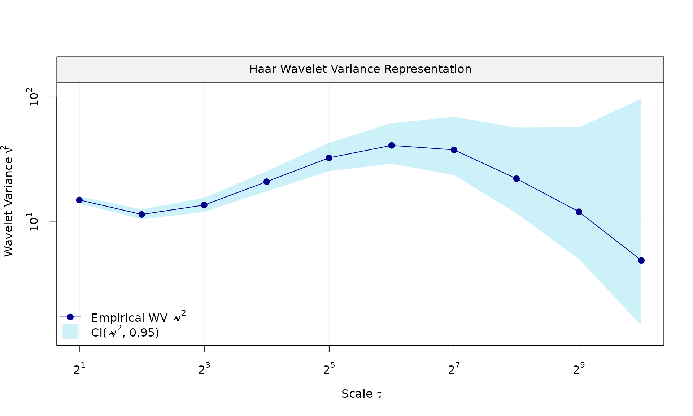
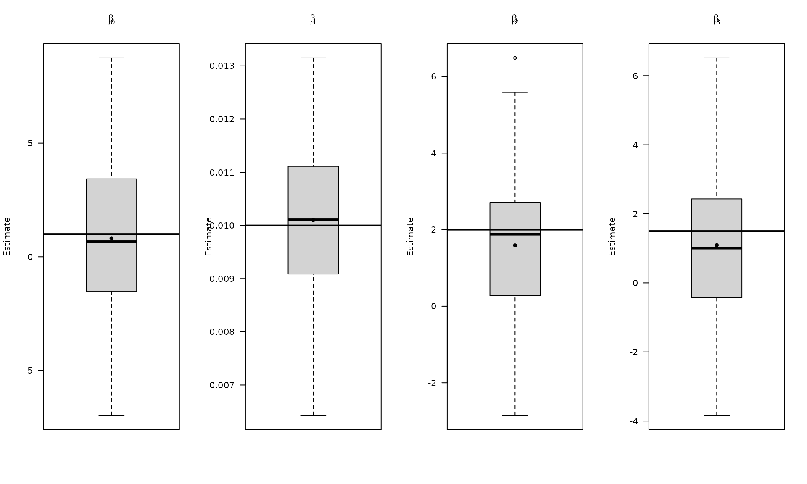
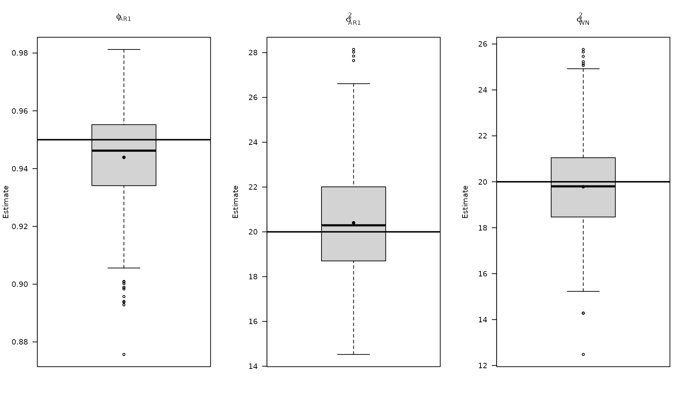
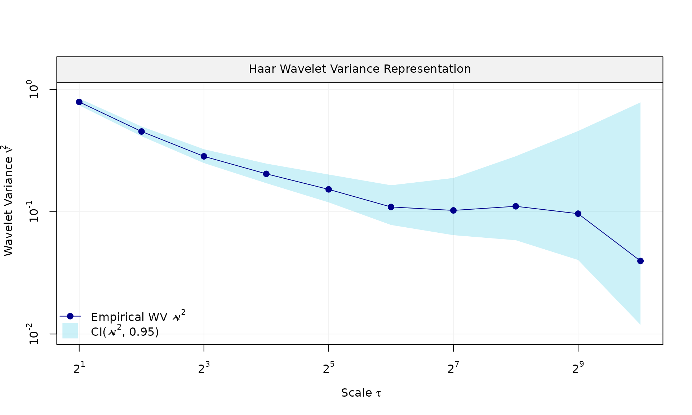
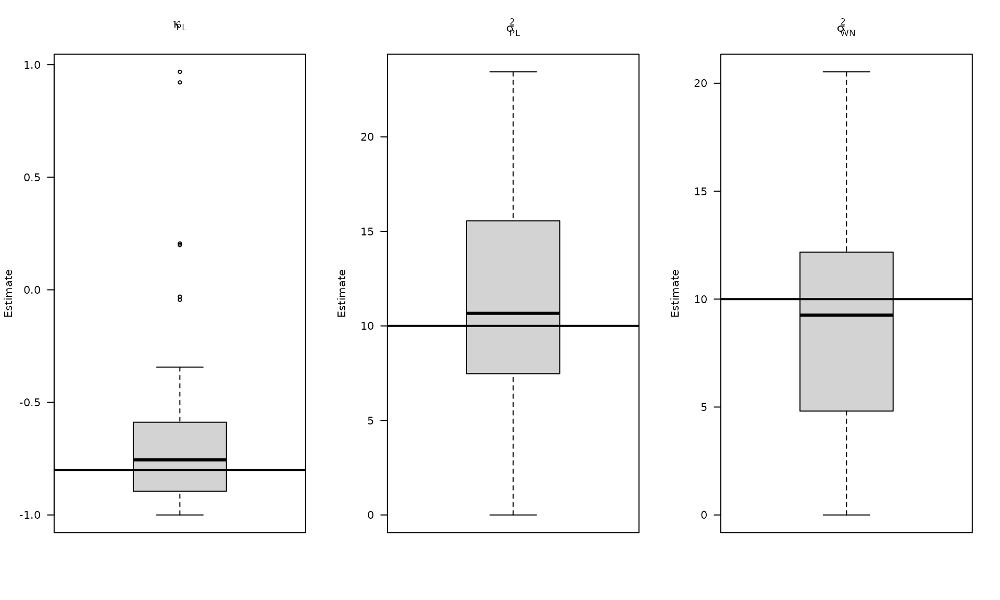
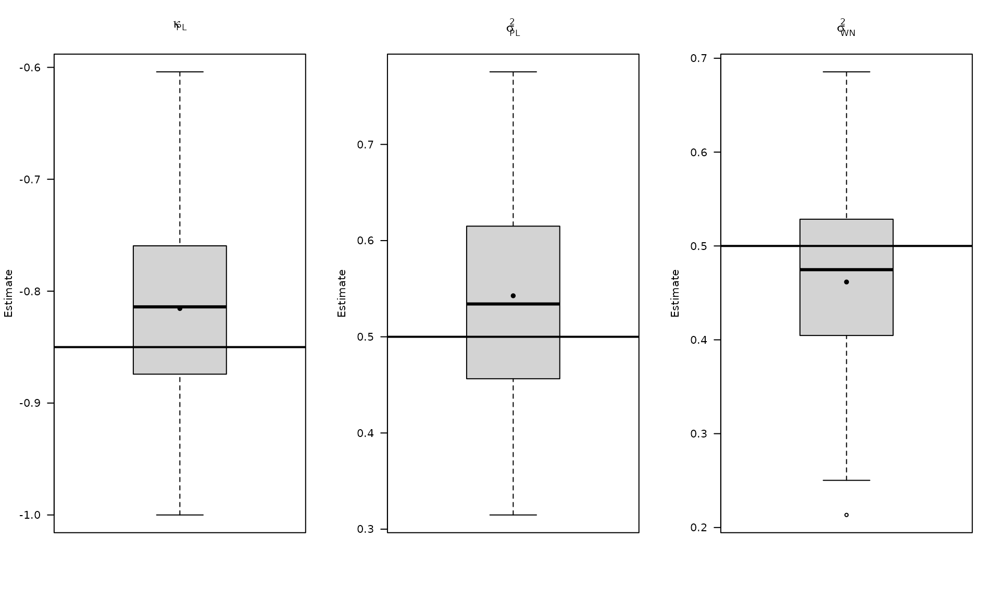
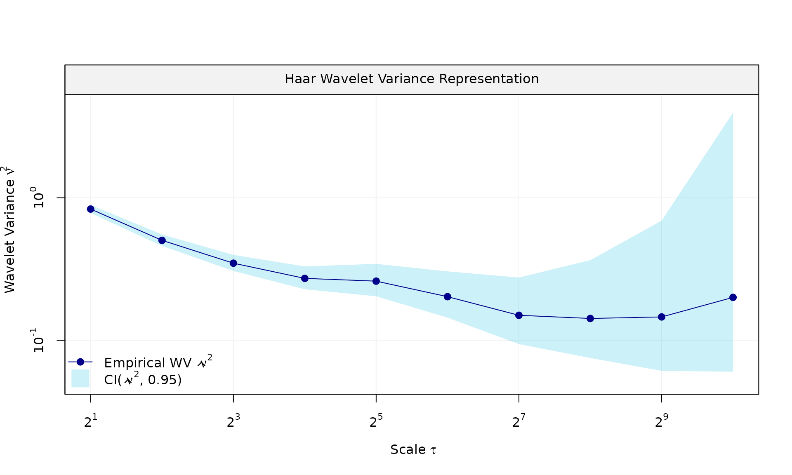
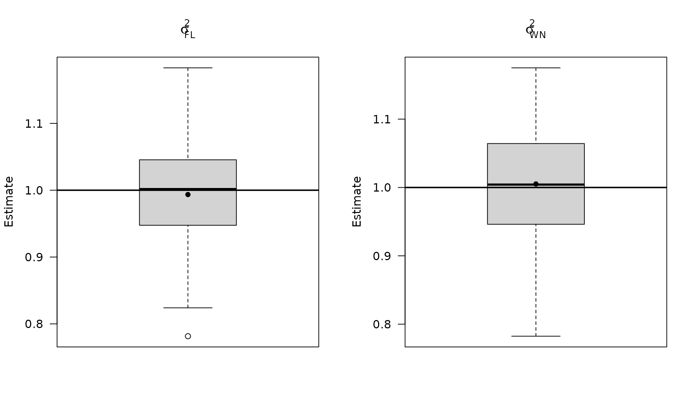

This vignette demonstrate on to use the GMWMX estimator to estimate linear models with dependent errors described by a composite stochastic process. Consider the model defined as:
where is a design matrix of observed predictors, is the regression parameter vector and is a zero-mean process following an unspecified joint distribution with positive-definite covariance function characterizing the second-order dependence structure of the process and parameterized by the vector .
The GMWMX estimator proposes to first estimate with the least square estimator defined as:
It then estimates the parameters of the stochastic model with a Generalized Method of Wavelet Moments approach (Guerrier et al. 2013) applied to the estimated residuals defined as .
More precisely, the estimated stochastic parameters, denoted as are defined as follows:
where is the vector of empirical wavelet variances computed on the estimated residuals , is the vector of theoretical wavelet variance implied by the stochastic model with parameters and is a weighting matrix.
The theoretical wavelet variance is obtained using the results of Xu et al. (2017) and Zhang (2008) that provide a computationally efficient form of the theoretical Allan variance (equivalent to the Haar wavelet variance up to a constant) for zero-mean stochastic processes such as . Indeed in Xu et al. (2017) they generalize the results in Zhang (2008) to zero-mean non-stationary processes by using averages of the diagonals and super-diagonals of the covariance matrix of . What this implies is that the GMWMX, does not require the storage of the covariance matrix of , but only of a vector of dimension which is then plugged into an explicit formula consisting in a linear combination of the elements of this vector.
The variance covariance matrix of the estimated regression parameters is then obtained as: .
This vignette is a detailed, self-contained simulation walkthrough
that showcases gmwmx2_new() for an arbitrary design matrix
X and response vector y. We build the signal,
generate noise, fit models, and run Monte Carlo experiments to check
coverage of confidence intervals. For each setting, we also plot the
empirical distributions of the estimated functional and stochastic
parameters.
library(gmwmx2)
library(wv)
library(dplyr)
boxplot_mean_dot <- function(x, ...) {
boxplot(x, ...)
x_mat <- as.matrix(x)
mean_vals <- colMeans(x_mat, na.rm = TRUE)
points(seq_along(mean_vals), mean_vals, pch = 16, col = "black")
}Build an arbitrary design matrix X
We use a generic design matrix that mirrors many geodetic or environmental signals:
- Intercept.
- Linear trend.
- Annual sinusoid and cosine.
This is arbitrary and can be replaced with any design matrix suitable to your application.
n = 10*365
X = matrix(NA, nrow = n, ncol = 4)
# intercept
X[, 1] = 1
# trend
X[, 2] = 1:n
# annual sinusoid
omega_1 <- (1 / 365.25) * 2 * pi
X[, 3] <- sin((1:n) * omega_1)
X[, 4] <- cos((1:n) * omega_1)
beta = c(1, 0.01, 2, 1.5)
# visualize the deterministic signal
plot(x = X[, 2], y = X %*% beta, type = "l",
main = "Signal", xlab = "Time", ylab = "Signal")
We now define three different stochastic noise settings using the
same X and beta.
Example 1: White noise + AR(1)
This is a classic short-memory model often used as a baseline.
phi_ar1 = 0.95
sigma2_ar1 = 1
sigma2_wn = 1
eps = gmwmx2::generate(ar1(phi = phi_ar1, sigma2 = sigma2_ar1) + wn(sigma2_wn), n = n, seed = 123)$series
plot(wv::wvar(eps))
Fit model (WN + AR1)
We fit using gmwmx2_new() with a composite model
composed of white noise and autoregressive process of order 1.
fit = gmwmx2_new(X = X, y = y, model = wn() + ar1() )
print(fit)## GMWMX fit
## Estimate Std.Error
## beta1 1.750183 0.7115559
## beta2 0.009619 0.0003373
## beta3 1.854265 0.4737883
## beta4 0.922956 0.4697880
##
## Stochastic model
## Sum of 2 processes
## [1] White Noise
## Estimated parameters : sigma2 = 1.037
## [2] AR(1)
## Estimated parameters : phi = 0.9563, sigma2 = 0.8911
##
## Runtime (seconds)
## Total : 1.0923To assess uncertainty, we run a Monte Carlo simulation and check empirical coverage of the confidence intervals for the trend.
B = 100
mat_res = matrix(NA, nrow=B, ncol=19)
for(b in seq(B)){
eps = generate(ar1(phi=phi_ar1, sigma2=sigma2_ar1) + wn(sigma2_wn), n=n, seed = (123 + b))$series
y = X %*% beta + eps
fit = gmwmx2_new(X = X, y = y, model = wn() + ar1() )
# mispecified model assuming white noise as the stochastic model
fit2 = lm(y~X[,2] + X[,3] + X[,4])
mat_res[b, ] = c(fit$beta_hat, fit$std_beta_hat,
summary(fit2)$coefficients[,1],
summary(fit2)$coefficients[,2],
fit$theta_domain$`AR(1)_2`,
fit$theta_domain$`White Noise_1`)
# cat("Iteration ", b, " completed.\n")
}
# compute empirical coverage
mat_res_df = as.data.frame(mat_res)
colnames(mat_res_df) = c("gmwmx_beta0_hat", "gmwmx_beta1_hat",
"gmwmx_beta2_hat", "gmwmx_beta3_hat",
"gmwmx_std_beta0_hat", "gmwmx_std_beta1_hat",
"gmwmx_std_beta2_hat", "gmwmx_std_beta3_hat",
"lm_beta0_hat", "lm_beta1_hat", "lm_beta2_hat", "lm_beta3_hat",
"lm_std_beta0_hat", "lm_std_beta1_hat", "lm_std_beta2_hat", "lm_std_beta3_hat",
"phi_ar1","sigma_2_ar1" ,"sigma_2_wn")Plot empirical distributions (beta and stochastic parameters)
par(mfrow = c(1, 4))
boxplot_mean_dot(mat_res_df[, c("gmwmx_beta0_hat")],las=1,
names = c("beta0"),
main = expression(beta[0]), ylab = "Estimate")
abline(h = beta[1], col = "black", lwd = 2)
boxplot_mean_dot(mat_res_df[, c("gmwmx_beta1_hat")],las=1,
names = c("beta1"),
main = expression(beta[1]), ylab = "Estimate")
abline(h = beta[2], col = "black", lwd = 2)
boxplot_mean_dot(mat_res_df[, c("gmwmx_beta2_hat")],las=1,
names = c("beta2"),
main = expression(beta[2]), ylab = "Estimate")
abline(h = beta[3], col = "black", lwd = 2)
boxplot_mean_dot(mat_res_df[, c("gmwmx_beta3_hat")],las=1,
names = c("beta3"),
main = expression(beta[3]), ylab = "Estimate")
abline(h = beta[4], col = "black", lwd = 2)
par(mfrow = c(1, 3))
boxplot_mean_dot(mat_res_df$phi_ar1,las=1,
names = c("phi_ar1"),
main = expression(phi["AR1"]), ylab = "Estimate")
abline(h = phi_ar1, col = "black", lwd = 2)
boxplot_mean_dot(mat_res_df$sigma_2_ar1,las=1,
names = c("phi_ar1"),
main = expression(sigma["AR1"]^2), ylab = "Estimate")
abline(h = sigma2_ar1, col = "black", lwd = 2)
boxplot_mean_dot(mat_res_df$sigma_2_wn,las=1,
names = c("phi_ar1"),
main = expression(sigma["WN"]^2), ylab = "Estimate")
abline(h = sigma2_wn, col = "black", lwd = 2)
Compute empirical coverage of confidence intervals for beta
zval = qnorm(0.975)
mat_res_df$upper_ci_gmwmx_beta1 = mat_res_df$gmwmx_beta1_hat + zval * mat_res_df$gmwmx_std_beta1_hat
mat_res_df$lower_ci_gmwmx_beta1 = mat_res_df$gmwmx_beta1_hat - zval * mat_res_df$gmwmx_std_beta1_hat
# empirical coverage of gmwmx beta
dplyr::between(rep(beta[2], B), mat_res_df$lower_ci_gmwmx_beta1, mat_res_df$upper_ci_gmwmx_beta1) %>% mean()## [1] 0.91
# do the same for lm beta
mat_res_df$upper_ci_lm_beta1 = mat_res_df$lm_beta1_hat + zval * mat_res_df$lm_std_beta1_hat
mat_res_df$lower_ci_lm_beta1 = mat_res_df$lm_beta1_hat - zval * mat_res_df$lm_std_beta1_hat
dplyr::between(rep(beta[2], B), mat_res_df$lower_ci_lm_beta1, mat_res_df$upper_ci_lm_beta1) %>% mean()## [1] 0.25Example 2: White noise + stationary power-law
Here we replace AR(1) by a stationary power-law component.
kappa_pl <- -0.85
sigma2_wn <- 1
sigma2_pl <- .8
eps_pl = generate(wn(sigma2_wn) + pl(kappa = kappa_pl, sigma2 = sigma2_pl),
n = n, seed = 123)
plot(eps_pl$series, type = "l")
fit_pl = gmwmx2_new(X = X, y = y_pl, model = wn() + pl())
fit_pl## GMWMX fit
## Estimate Std.Error
## beta1 1.689352 0.8005764
## beta2 0.009907 0.0002295
## beta3 1.815708 0.1160633
## beta4 1.459359 0.1131306
##
## Stochastic model
## Sum of 2 processes
## [1] White Noise
## Estimated parameters : sigma2 = 1.074
## [2] Stationary PowerLaw
## Estimated parameters : kappa = -0.8406, sigma2 = 0.7393
##
## Runtime (seconds)
## Total : 0.4451Monte Carlo coverage for the power-law case:
B_pl = 100
mat_res_pl = matrix(NA, nrow = B_pl, ncol = 19)
for(b in seq(B_pl)){
eps = generate(wn(sigma2_wn) + pl(kappa = kappa_pl, sigma2 = sigma2_pl),
n = n, seed = (123 + b))$series
y = X %*% beta + eps
fit = gmwmx2_new(X = X, y = y, model = wn() + pl())
fit2 = lm(y~X[,2] + X[,3] + X[,4])
mat_res_pl[b, ] = c(fit$beta_hat, fit$std_beta_hat,
summary(fit2)$coefficients[,1],
summary(fit2)$coefficients[,2],
fit$theta_domain$`Stationary PowerLaw_2`,
fit$theta_domain$`White Noise_1`)
# cat("Iteration ", b, " \n")
}
mat_res_pl_df = as.data.frame(mat_res_pl)
colnames(mat_res_pl_df) = c("gmwmx_beta0_hat", "gmwmx_beta1_hat",
"gmwmx_beta2_hat", "gmwmx_beta3_hat",
"gmwmx_std_beta0_hat", "gmwmx_std_beta1_hat",
"gmwmx_std_beta2_hat", "gmwmx_std_beta3_hat",
"lm_beta0_hat", "lm_beta1_hat", "lm_beta2_hat", "lm_beta3_hat",
"lm_std_beta0_hat", "lm_std_beta1_hat",
"lm_std_beta2_hat", "lm_std_beta3_hat",
"kappa_pl","sigma2_pl" ,"sigma2_wn")Plot empirical distributions (beta and stochastic parameters)
par(mfrow = c(1, 4))
boxplot_mean_dot(mat_res_df[, c("gmwmx_beta0_hat")],las=1,
names = c("beta0"),
main = expression(beta[0]), ylab = "Estimate")
abline(h = beta[1], col = "black", lwd = 2)
boxplot_mean_dot(mat_res_df[, c("gmwmx_beta1_hat")],las=1,
names = c("beta1"),
main = expression(beta[1]), ylab = "Estimate")
abline(h = beta[2], col = "black", lwd = 2)
boxplot_mean_dot(mat_res_df[, c("gmwmx_beta2_hat")],las=1,
names = c("beta2"),
main = expression(beta[2]), ylab = "Estimate")
abline(h = beta[3], col = "black", lwd = 2)
boxplot_mean_dot(mat_res_df[, c("gmwmx_beta3_hat")],las=1,
names = c("beta3"),
main = expression(beta[3]), ylab = "Estimate")
abline(h = beta[4], col = "black", lwd = 2)
par(mfrow = c(1, 3))
boxplot_mean_dot(mat_res_pl_df$kappa_pl,las=1,
main = expression(kappa["PL"]), ylab = "Estimate")
abline(h = kappa_pl, col = "black", lwd = 2)
boxplot_mean_dot(mat_res_pl_df$sigma2_pl,las=1,
main = expression(sigma["PL"]^2), ylab = "Estimate")
abline(h = sigma2_pl, col = "black", lwd = 2)
boxplot_mean_dot(mat_res_pl_df$sigma2_wn,las=1,
names = c("phi_ar1"),
main = expression(sigma["WN"]^2), ylab = "Estimate")
abline(h = sigma2_wn, col = "black", lwd = 2)
Compute empirical coverage of confidence intervals for beta
zval = qnorm(0.975)
mat_res_pl_df$upper_ci_gmwmx_beta1 = mat_res_pl_df$gmwmx_beta1_hat + zval * mat_res_pl_df$gmwmx_std_beta1_hat
mat_res_pl_df$lower_ci_gmwmx_beta1 = mat_res_pl_df$gmwmx_beta1_hat - zval * mat_res_pl_df$gmwmx_std_beta1_hat
# empirical coverage of gmwmx beta
dplyr::between(rep(beta[2], B_pl), mat_res_pl_df$lower_ci_gmwmx_beta1, mat_res_pl_df$upper_ci_gmwmx_beta1) %>% mean()## [1] 0.88
# do the same for lm beta
mat_res_pl_df$upper_ci_lm_beta1 = mat_res_pl_df$lm_beta1_hat + zval * mat_res_pl_df$lm_std_beta1_hat
mat_res_pl_df$lower_ci_lm_beta1 = mat_res_pl_df$lm_beta1_hat - zval * mat_res_pl_df$lm_std_beta1_hat
dplyr::between(rep(beta[2], B_pl), mat_res_pl_df$lower_ci_lm_beta1, mat_res_pl_df$upper_ci_lm_beta1) %>% mean()## [1] 0.14Example 3: White noise + flicker
Flicker noise corresponds to a non stationary power-law with spectral
index kappa = -1 but is handled explicitly by
flicker() in this package.
sigma2_wn_fl <- 1
sigma2_fl <- 1
eps_fl = generate(wn(sigma2_wn_fl) + flicker(sigma2 = sigma2_fl),
n = n, seed = 123)
plot(eps_fl$series, type = "l")
y_fl = X %*% beta + eps_fl$series
plot(X[, 2], y_fl, type = "l", main = "Simulated y (WN + Flicker)")
fit_fl = gmwmx2_new(X = X, y = y_fl, model = wn() + flicker())
fit_fl## GMWMX fit
## Estimate Std.Error
## beta1 0.43357 0.8738286
## beta2 0.01014 0.0004146
## beta3 1.96665 0.1751458
## beta4 1.53023 0.1694345
##
## Stochastic model
## Sum of 2 processes
## [1] White Noise
## Estimated parameters : sigma2 = 1.105
## [2] Flicker
## Estimated parameters : sigma2 = 0.8932
##
## Runtime (seconds)
## Total : 0.8499Monte Carlo coverage for the flicker case:
B_fl = 100
mat_res_fl = matrix(NA, nrow = B_fl, ncol = 18)
for(b in seq(B_fl)){
eps = generate(wn(sigma2_wn_fl) + flicker(sigma2 = sigma2_fl),
n = n, seed = (123 + b))$series
y = X %*% beta + eps
fit = gmwmx2_new(X = X, y = y, model = wn() + flicker())
fit2 = lm(y~X[,2] + X[,3] + X[,4])
mat_res_fl[b, ] = c(fit$beta_hat, fit$std_beta_hat,
summary(fit2)$coefficients[,1],
summary(fit2)$coefficients[,2],
fit$theta_domain$`Flicker_2`,
fit$theta_domain$`White Noise_1`)
# cat("Iteration ", b, " \n")
}
mat_res_fl_df = as.data.frame(mat_res_fl)
colnames(mat_res_fl_df) = c("gmwmx_beta0_hat", "gmwmx_beta1_hat",
"gmwmx_beta2_hat", "gmwmx_beta3_hat",
"gmwmx_std_beta0_hat", "gmwmx_std_beta1_hat",
"gmwmx_std_beta2_hat", "gmwmx_std_beta3_hat",
"lm_beta0_hat", "lm_beta1_hat", "lm_beta2_hat", "lm_beta3_hat",
"lm_std_beta0_hat", "lm_std_beta1_hat",
"lm_std_beta2_hat", "lm_std_beta3_hat",
"sigma2_fl" ,"sigma2_wn")Compute empirical coverage of confidence intervals for beta
zval = qnorm(0.975)
mat_res_fl_df$upper_ci_gmwmx_beta1 = mat_res_fl_df$gmwmx_beta1_hat + zval * mat_res_fl_df$gmwmx_std_beta1_hat
mat_res_fl_df$lower_ci_gmwmx_beta1 = mat_res_fl_df$gmwmx_beta1_hat - zval * mat_res_fl_df$gmwmx_std_beta1_hat
# empirical coverage of gmwmx beta
dplyr::between(rep(beta[2], B_pl), mat_res_fl_df$lower_ci_gmwmx_beta1, mat_res_fl_df$upper_ci_gmwmx_beta1) %>% mean()## [1] 0.93
# do the same for lm beta
mat_res_fl_df$upper_ci_lm_beta1 = mat_res_fl_df$lm_beta1_hat + zval * mat_res_fl_df$lm_std_beta1_hat
mat_res_fl_df$lower_ci_lm_beta1 = mat_res_fl_df$lm_beta1_hat - zval * mat_res_fl_df$lm_std_beta1_hat
dplyr::between(rep(beta[2], B_pl), mat_res_fl_df$lower_ci_lm_beta1, mat_res_fl_df$upper_ci_lm_beta1) %>% mean()## [1] 0.05Plot empirical distributions (beta and stochastic parameters)
par(mfrow = c(1, 4))
boxplot_mean_dot(mat_res_df[, c("gmwmx_beta0_hat")],las=1,
names = c("beta0"),
main = expression(beta[0]), ylab = "Estimate")
abline(h = beta[1], col = "black", lwd = 2)
boxplot_mean_dot(mat_res_df[, c("gmwmx_beta1_hat")],las=1,
names = c("beta1"),
main = expression(beta[1]), ylab = "Estimate")
abline(h = beta[2], col = "black", lwd = 2)
boxplot_mean_dot(mat_res_df[, c("gmwmx_beta2_hat")],las=1,
names = c("beta2"),
main = expression(beta[2]), ylab = "Estimate")
abline(h = beta[3], col = "black", lwd = 2)
boxplot_mean_dot(mat_res_df[, c("gmwmx_beta3_hat")],las=1,
names = c("beta3"),
main = expression(beta[3]), ylab = "Estimate")
abline(h = beta[4], col = "black", lwd = 2)
par(mfrow = c(1, 2))
boxplot_mean_dot(mat_res_fl_df$sigma2_fl,las=1,
main = expression(sigma["FL"]^2), ylab = "Estimate")
abline(h = sigma2_fl, col = "black", lwd = 2)
boxplot_mean_dot(mat_res_fl_df$sigma2_wn,las=1,
names = c("phi_ar1"),
main = expression(sigma["WN"]^2), ylab = "Estimate")
abline(h = sigma2_wn_fl, col = "black", lwd = 2)